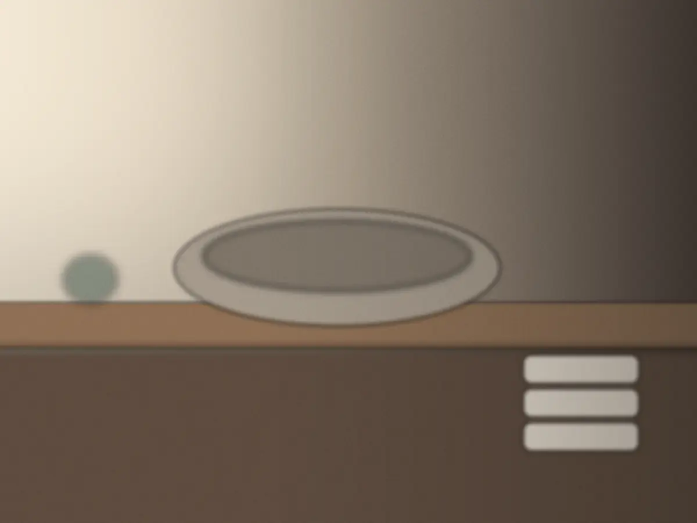
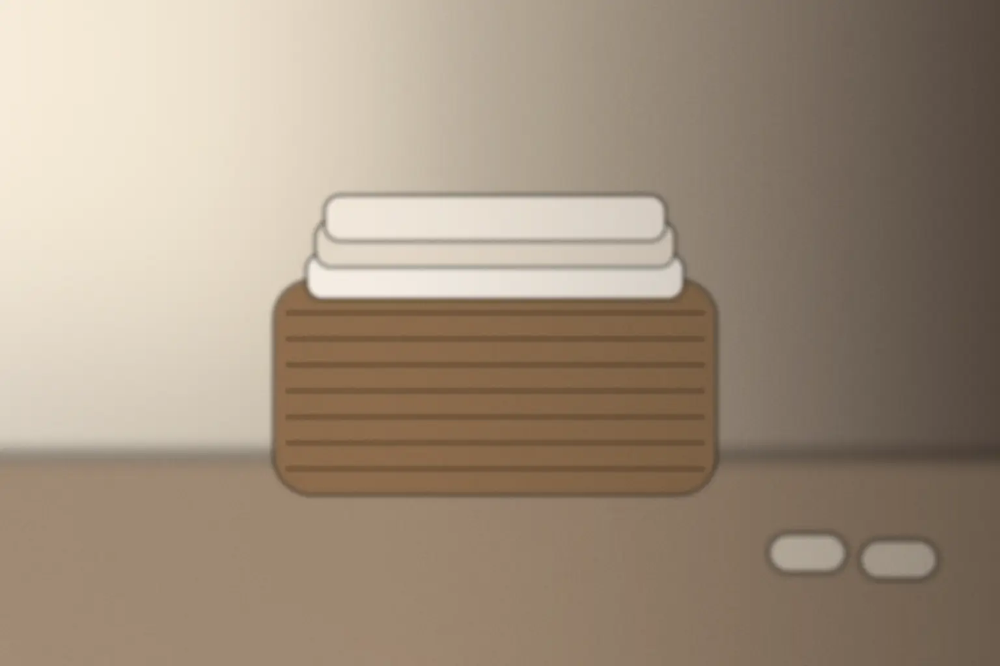

ご予約と当日まで
一日四名までの、
ご予約のこと。
画像はAI生成のイメージです
予約の方法
いちばん楽な方法で、どうぞ。
回数券や
空きの確かめ方
枠は、一日に四つだけです。
予約表には、
施術の始まる時刻は、予約表の枠ごとに出ます（時刻は【要確認】）。
空き埋まり
予約から当日まで
ご予約から、当日の玄関まで。

ご予約
予約表・お電話・メールで
希望のメニューと日にちを伝えます。
用意するものなし
確定のあと
確定のメールが届きます
離れまでの道と、当日の案内が書いてあります。
用意するものメールを開ける端末
前日まで
変更・キャンセルの締め切り
前日までのご連絡なら、変更もキャンセルも無料です。
当日のキャンセル扱いは【要確認】
当日
手ぶらでどうぞ
着いたら、まずお話から。苦手な香りもそのときに。
用意するものメイク道具（使う方だけ）
空きの問い合わせ
空きの問い合わせと、ご相談。
希望の日が
個人情報の扱い（使う目的・保存の期間・ほかへ渡さないこと）は【要確認】。